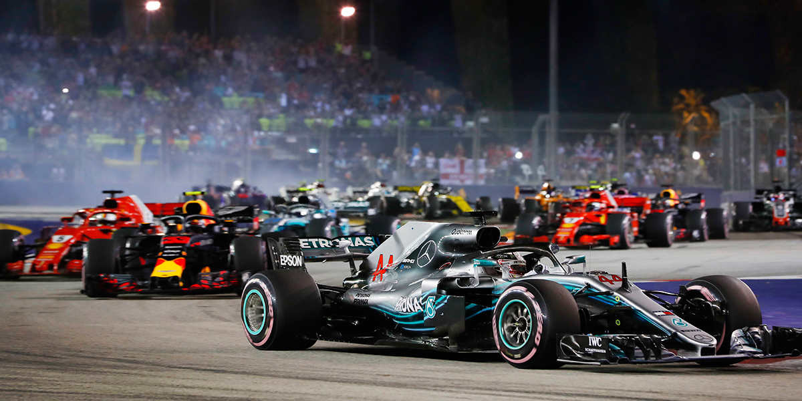

Культура
Netflix снимет фильм о гонках «Формулы-1» с Де Ниро в главной роли
Американская развлекательная компания, поставщик фильмов и сериалов на основе потокового мультимедиа Netflix снимет новый фильм о гонках «Формулы-1». Об этом сообщает Deadline.
По информации источника, в фильме под названием «Формула» (The Formula) будет рассказана история пилота «Формулы-1», ставшего водителем в преступной банде ради спасения семьи.
Отметим, что режиссером картины станет Герард МакМюррей, а главную роль сыграет обладатель премии «Оскар» Роберт Де Ниро.
Дата выхода ленты остается неизвестной.
В Сети вышел трейлер фильма «Годзилла против Конга»
Премьера фильма должна состояться 26 марта. Об этом стало известно информационно-новостному порталу EVO-RUS.COM.
В минувшее воскресенье, 24 января, на официальном YouTube-канале киностудии Warner Bros был опубликован трейлер нового фильма, в котором зрители смогут увидеть решающую битву между легендарным Кинг-Конгом и Годзиллой.
Втрейлер попал момент борьбы над океаном, Конгу удается сбить Годзиллу в воду, но тот не сдается и стреляет по противнику атомным тепловым лучом.
Напомним, из-за коронавирусной пандемии премьера фильма переносилась несколько раз. По последней информации зрители смогут наконец-то увидеть фильм 26 марта 2021 года. Отмечается, что кинопроект “Годзилла против Конга” одновременно выйдет как в кинотеатрах, так и на платформе HBO Max.
Экономика
Госдума приняла в I чтении проект об онлайн-получении вычетов по НДФЛ
МОСКВА, 26 янв - РИА Новости. Госдума приняла в первом чтении законопроект об упрощении порядка получения имущественных и инвестиционных вычетов по налогу на доходы физических лиц (НДФЛ).
Действующий сейчас механизм получения вычетов требует подачи налоговой декларации по НДФЛ (форма 3-НДФЛ) с подтверждающими право на вычеты документами. Только после этого человек может вернуть 13% подоходного налога от суммы кредита и с уплаченных процентов.
Законопроект, внесенный правительством РФ, упрощает порядок получения имущественных налоговых вычетов по расходам на приобретение жилья и погашение процентов по целевым займам (кредитам), инвестиционных вычетов - по операциям, учитываемым на индивидуальном инвестиционном счете.
Упрощенный порядок подразумевает бесконтактное общение граждан с налоговыми органами через личный кабинет на сайте ФНС. Право на получение вычета в таком формате налоговики будут проверять сами с помощью автоматизированной информационной системы. То есть ни заполнять налоговую декларацию, ни собирать подтверждающие документы будет не нужно.
В мире
Названо потенциально эффективное средство от COVID-19
Препарат «Плитидепсин» в ходе доклинических исследований показал высокую эффективность в борьбе с SARS-CoV-2. Об этом говорится в публикации на сайте научного журнала Science.
Изначально препарат изготовили для лечения злокачественных опухолей. Изучение действия препарата на коронавирус проходило в пробирке на тканях и на грызунах.
Гистопатологический анализ показал уменьшение воспаления легких у мышей, получавших «Плитидепсин» по сравнению с мышами, получавшими препарат «Ремдесивир» уже на третий день после инфицирования
Авторы исследования рекомендуют провести более обширные клинические исследования использования «Плитидепсина» для лечения COVID-19.
Спорт
Макгрегора отстранили от боев на полгода после нокаута от Порье
Ирландского бойца смешанных единоборств Конора Макгрегора отстранили от выступлений в промоушене на шесть месяцев. Это связано с травмами, которые он получил в бою против американца Дастина Порье. Об этом сообщает MMAJunkie.
Согласно данным источника, Макгрегор получил травмы большеберцовой и малоберцовой костей. Медики предполагают, что его лечение займет 180 дней. При этом они допускают, что восстановление может пройти быстрее.
Сам ирландец во время общения с журналистами рассказал, что пропустил большое количество лоукиков. Многие из них пришлись на ногу спортсмена.
При этом Макгрегору потребовалась помощь для передвижения после боя. Для этого он использовал костыль.